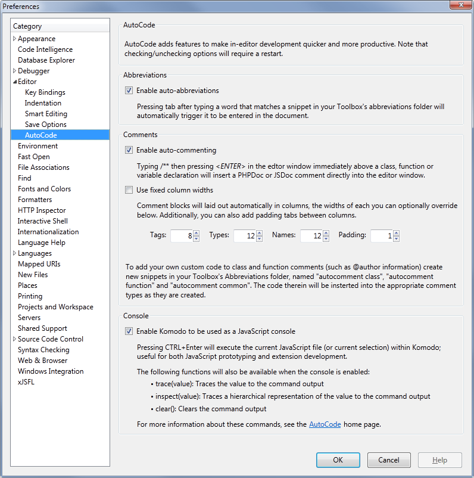
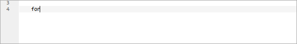
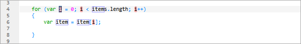
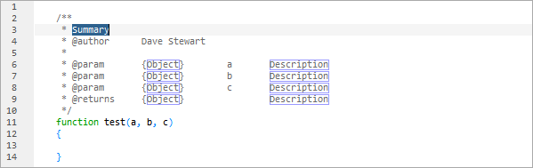
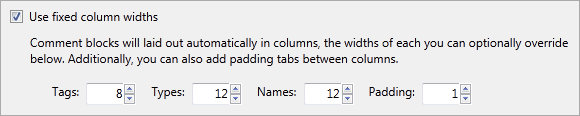
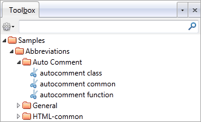
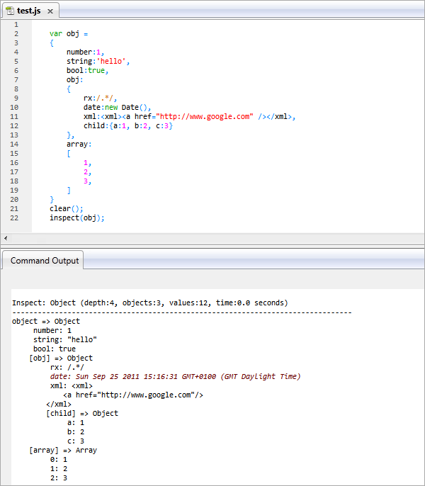

Komodo AutoCode Extension
Intro
Overview
The AutoCode extension adds some extra functionality to Komodo, that makes it easier than ever to write (and test) quality code. Its features include:
- Tab-complete on abbreviations
- DocComment generation
- Places integration
- JavaScript console functionality
- Auto-Complete customisation
Download and intallation
Download AutoCode from the Active State site from here, then install using the following instuctions:
- Make sure Komodo Edit is open
- Browse to your xJSFL/core/install/Komdo/ folder
- Drag the correct .xpi file onto Komodo Edit
- Restart Komodo Edit
Preferences
Ensure that the extension's functionality is enabled by going to Preferences > Editor > AutoCode, and making sure that the relevant checkboxes are checked.
For more information see the section on Komodo installation.
Features
Auto-Abbreviations
Abbreviations are a standard Komodo feature that allow you to enter a single keyword in the editor pane, then expand that keyword into an editable code, with placeholder regions that you tab through to fill in values. It's perhaps easier illustrated with a sequence of images:
Firstly, type a keyword corresponding to an abbreviation name, in this case "for":

Then, press tab (as opposed to the more cumbersome default, CTRL+T) to trigger the abbreviation's template:

The template is inserted into the document, and the first place holder is highlighted in each place in the template that it is used. You can alter it by simply typing, or accept the value and tab to the next placeholder.
AutoCode allows you to use the TAB key to enter abbreviations, making codeing more familiar.
DocComment generation
Komodo uses the JSDoc syntax to document JavaScript code, as well as hint param and return types.
With the Auto-Comment checkbox enabled in the preferences, all you need to do comment a function or method is to type /** just above the function declaration...

...then press tab:

The comment will be completed, and placeholders will be entered, allowing you to tab through the values.
You'll notice that the entries are also nicely formatted into columns. There are more options in the preferences for this, including fixed-width columns, and padding:

To add your own custom code to class and function comments (such as @author information) create new snippets in your Toolbox's Abbreviations folder, named "autocomment class", "autocomment function" and "autocomment common":

The code therein will be insterted automatically into the appropriate comment types as they are created.
Note that AutoCode also supports PHPDoc for documenting PHP pages.
Places integration
The final piece of AutoCode functionality is probably the most powerful, as it wllows you to enter not only file paths from files in the Places panel, but also generate custom code around those paths, customised to the current language.
By ALT+clicking in the Places panel, you can automatically insert the relative or absolute path to that file in the current document.
However, that's not all. By an advanced system of folders and Snippets as template files, you can also completely customise the code that gets inserted, based on:
- The Places file extension
- A custom group you assign to groups of Places file extensions (see the Preferences panel)
- The document's file extension
- The document's current language.
- The project name
- Project-specific variables
Each of these insertions is fully customisable, simply by editing the snippets in the AutoCode toolbox:
Each of the snippets uses the standard [[%tabstop:CONTENT]] format to hold variables, the following of which can be used:
- file - the full filename, including the extension
- filename - the filename only (without the extension)
- fileext - the file extension only
- path - the full path to the file (as determined by preferences)
- relpath - the relative path to the file
- abspath - the absolute path to the file from the project root
- folderpath - the full path to the folder (as determined by preferences)
- relfolderpath - the relative path to the folder
- absfolderpath - the absolute path to the folder from the project root
- uri - the URI to the file
- folderuri - the URI to the folder
- %VAR - any variable you have set in your project's Environment Variables
You can use these values in combination with text and other code to form quote advanced code insertion.
For example, if you are in an HTML document, you can simply click on any image type to quickly in insert an image tag.
Or, you could click on a JavaScript file to insert a <script> tag.
Or if in the JavaScript part of the HTML document, you could click on an image file to insert some image-specific JavaScript code:
The order of decision-making in order to determine which Snippet to use (or not use) is specific, and is outlined below:
- Unmodified
- Add the unmodified path if:
- There's a document selection
- The caret is between 2 matching quotes
- Add the unmodified path if:
- View File-type override
- Use the Snippet from the
Places/Defaults/<ext>files if:- The view's file extension is registered as a default format in AutoCode Preferences, and matches a file name
- Use the Snippet from the
- Project Name / Project Variable override
- Use Snippets from
Places/ProjectorPlaces/Customfolders if:- The project environment variable
AUTOCODE PLACEmatches aPlaces/Custom/<folder> - The project environment variable
AUTOCODE PROJECTmatches aPlaces/Projects/<folder> - The project name matches a
Places/Projects/<folder> - The view's current language and the places file extension matches a
Places/<language>/<ext>
- The project environment variable
- Use Snippets from
- View Language + File-type combination
- Use the Snippet from
<language>/<file>if:- The view's current language and file group matches a
<folder>/<language>/<group> - The view's current language and file extension matches a
<folder>/<language>/<ext> - The view's current language is found, and there is a default snippet
<folder>/<language>/default
- The view's current language and file group matches a
- Use the Snippet from
- Global defaults
- Final defaults
- Fall back to
Places/Defaults/defaultif it exists - Enter the path as-is if it doesn't
- Fall back to
- Final defaults
The system is quite powerful and should allow you to cover most scenarios, including project-specific settings, so if you use a certain framework you could easily override standard <img> tags to instead insert your framework specific asset include.
Examine the sample snippets that ship with AutoCode to get an idea, and add your own as you see fit.
JavaScript Console
Enabling the JavaScript console in AutoCode allows you to edit and run JavaScript code directly in Komodo.
With a JavaScript file open (the extension must be .js), you can use the CTRL+Enter shortcut key to evaluate the JavaScript currently in the editor window. (Note that you can also execute Windows .bat files by pressing CTRL+Enter).
If the code is valid, it will execute. If not, an error message will pop up, and Komodo will move the cursor to the line of the error.
The following commands are also available when using the Console, which allow you test values and output in the Command Output panel as you develop:
- trace(value): Traces the value to the command output
- inspect(value): Traces a hierarchical representation of the value to the command output. More info about inspect()'s arguments can be found here.
- clear(): Clears the command output
Below you can see the result of an inspect:

Auto-Complete
The simplest functionality in AutoCode allows you to change the height of the AutoComplete dropdown from the default 5 lines.